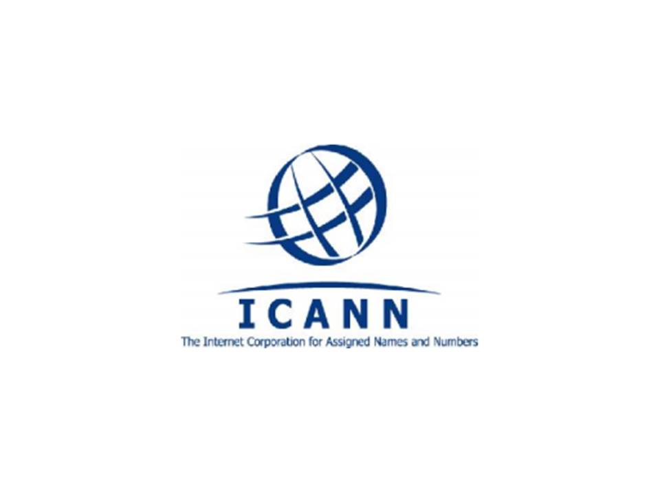

- ¿Qué es y cómo se registra un dominio?
- Dominios Internacionales
- Dominios Nacionales
- Nic Argentina
- Reglas de registro
- Tipos de registros
- Preguntas frecuentes
- Organizaciones relacionadas con los dominios de internet
- Pasos a seguir para registrar un dominio
- Bibliografía
¿QUÉ ES Y CÓMO SE REGISTRA UN DOMINIO?
Un dominio de Internet es una red de identificación asociada a un grupo de dispositivos o
equipos conectados a la red internet.
El propósito principal de los nombres de dominio en internet y del sistema de nombres de
dominio (DNS), es traducir las direcciones IP de cada modo activo en la red, a términos
memorizables y fáciles de encontrar.
Esta abstracción hace posible que cualquier servicio (de red) pueda moverse de un lugar
geográfico a otro en la red internet, aún cuando el cambio implique que tendrá una dirección
IP diferente.
Los dominios genéricos .com son manejados de manera
privada por varias empresas y el registro tiene un cargo de
aproximadamente U$S 15 al año.
En ICANN figuran las empresas autorizadas a registrar dominios
en EE.UU.

http://www.icann.org/tr/spanish.html
En Argentina los dominios son manejados por Cancillería (NIC) y su registro tiene un costo de
$270.
El proceso de registro dura aproximadamente entre 48 y 72hs.
NIC Argentina es la sigla que, siguiendo las prácticas internacionales en la materia, identifica al
Ministerio de Relaciones Exteriores, Comercio Internacional y Culto en su carácter de
administrador del dominio Argentina de INTERNET.
http://www.nic.ar
NIC Argentina
Esmeralda 1212, C1007ABR
Buenos Aires - Argentina
Tel.: +54 (11) 4819-7631
Fax: +54 (11) 4819-7630
e-mail: info@nic.ar
ACERCA DE NIC ARGENTINA
NIC Argentina , bajo la jurisdicción de la Dirección Nacional de Registro de Dominios de
Internet, tiene la responsabilidad de administrar el dominio de nivel superior .ar, además del
registro de nombres de dominio de internet de las personas físicas y jurídicas.
Nuestra misión es, respaldados por un soporte tecnológico de excelencia, manejar dicho
dominio de tal manera que sea sinónimo de calidad y confianza, representando al país en la
red.
Nuestro objetivo y mayor desafío, promover una internet cada vez más segura y equitativa
para todos los usuarios.
Para este fin diagramaremos y ejecutaremos medidas, planes y programas relativos y mediaremos en la resolución de conflictos que puedan surgir con nuestros registrantes;
armonizando las disposiciones generales y globales que regulan el registro de los nombres de dominio con el derecho interno.
Descargar la unidad completa ACA
Te pareció interesante la lectura?
Contactanos